Walks through the exact stack of memory-optimization techniques (FSDP, DeepSpeed Ulysses context parallelism, activation checkpointing, CPU offload, tiled element-wise ops, and Together's own 'Untitled Ulysses' chunked-head variant) that...
This traces the talk's own sequence of memory fixes, each applied only after the previous one still ran out of memory (ours).
“if you are taking a standard transformer-based language model and trying to extend its context, you can run into two bottlenecks”
said at 03:33“as you continue scaling your context, your memory keeps growing linearly, which is not as bad, but still pretty difficult to deal with”
said at 04:06“there is a pretty well-known technique called DeepSpeed Ulysses, first uh introduced by Microsoft”
said at 06:10“if you apply Ulysses context parallelism, the utilization drops quite significantly, like approximately 8x uh here”
said at 07:13“with that, with activation checkpointing, you can drop the activation usage by like a further factor of eight, but still something else needs to be done”
said at 08:18“this optimization, to the best of our knowledge, was first implemented uh by Unsloth, and uh it allows you to drastically expand the context window”
said at 08:50“you compute attention over them, you store the partial result, then you follow up with the next stage, which can reuse all the buffers you've allocated at the previous stage”
said at 10:53“both at the 8 billion scale and at the 32 billion scale, we are matching quite closely the most memory optimized implementations of”
said at 11:26The step-by-step 'we ran out of memory, then applied X, still ran out, applied Y' structure is a useful checklist to replicate on a smaller long-context fine-tune before reaching for a custom kernel like their chunked-head reuse trick (ours).
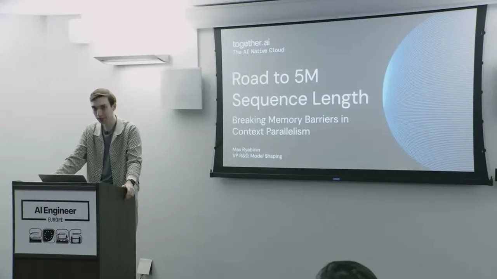
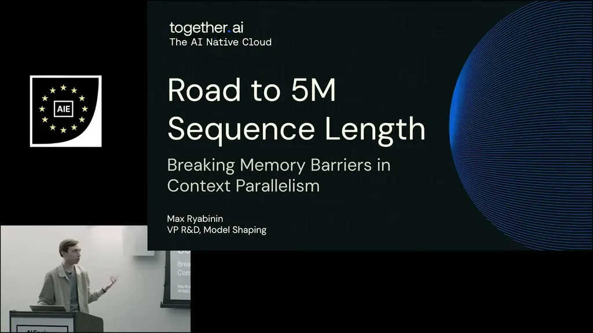
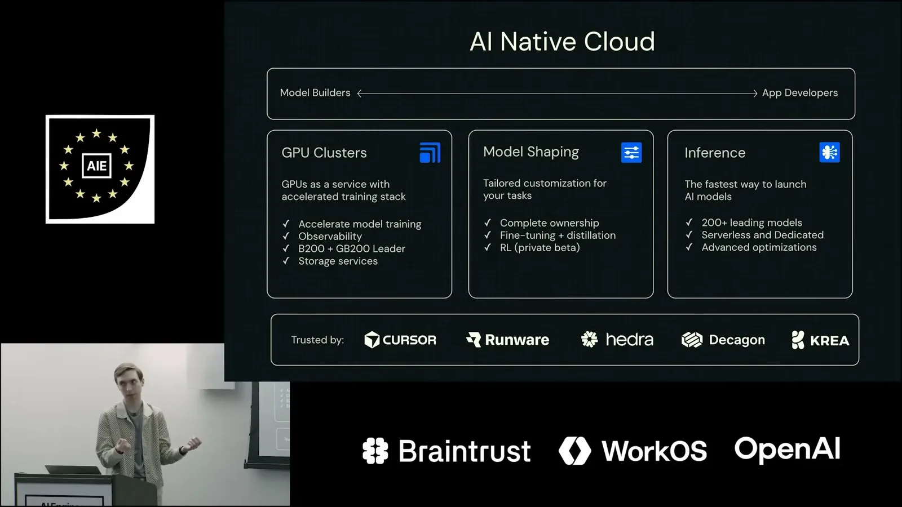
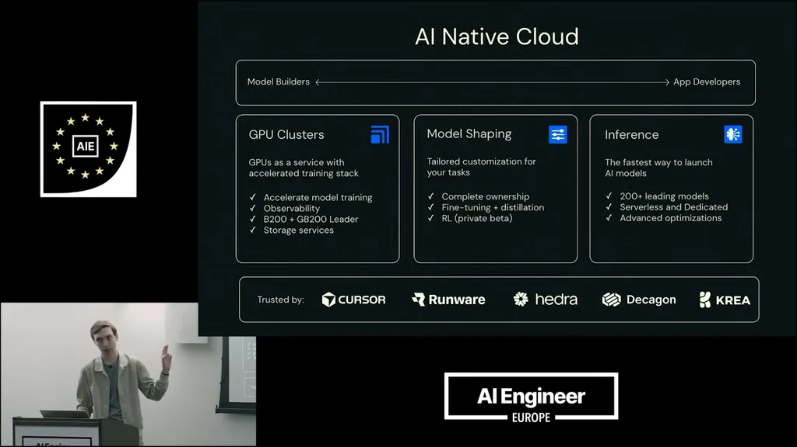
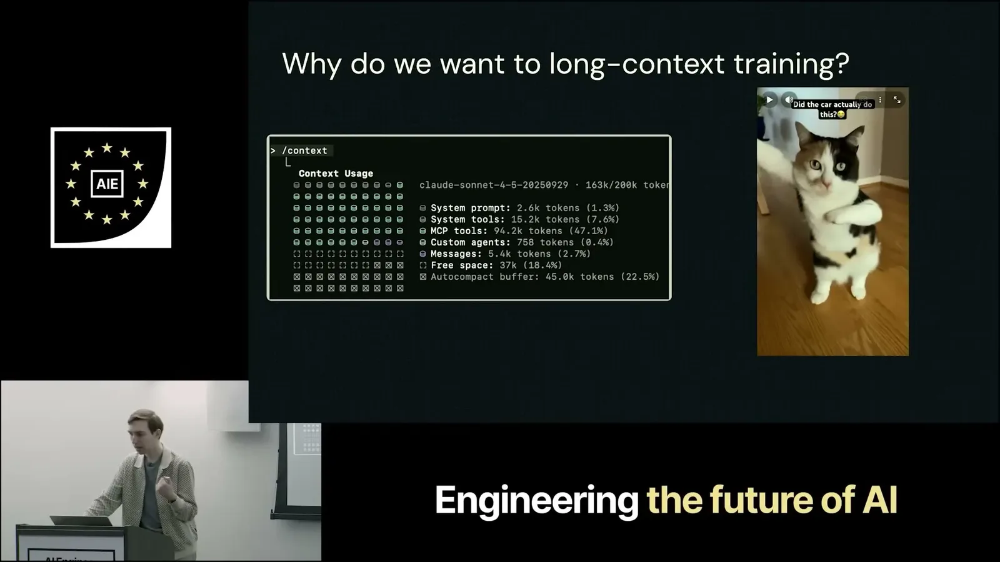
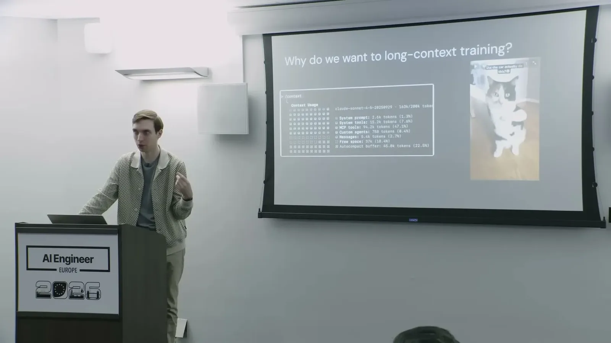
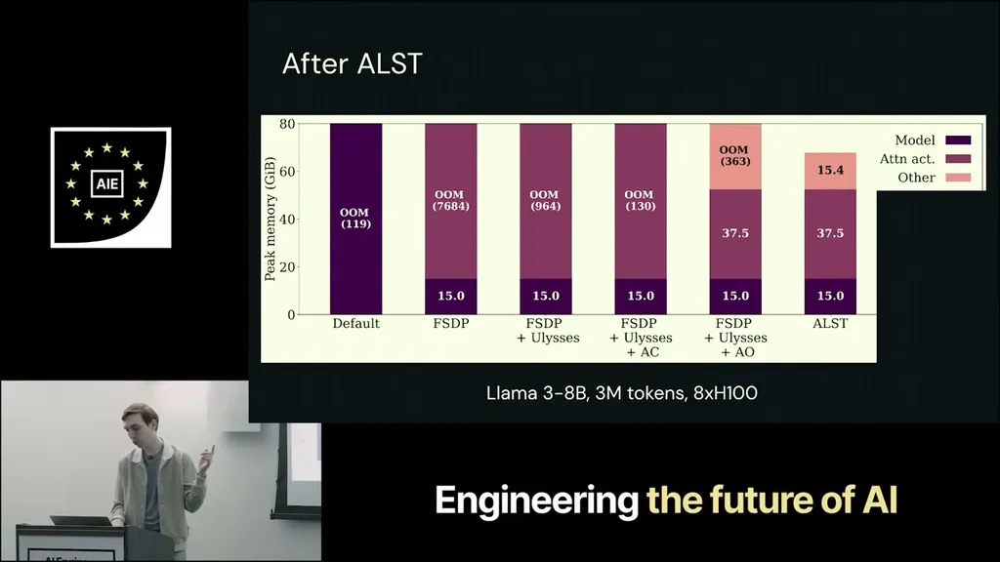
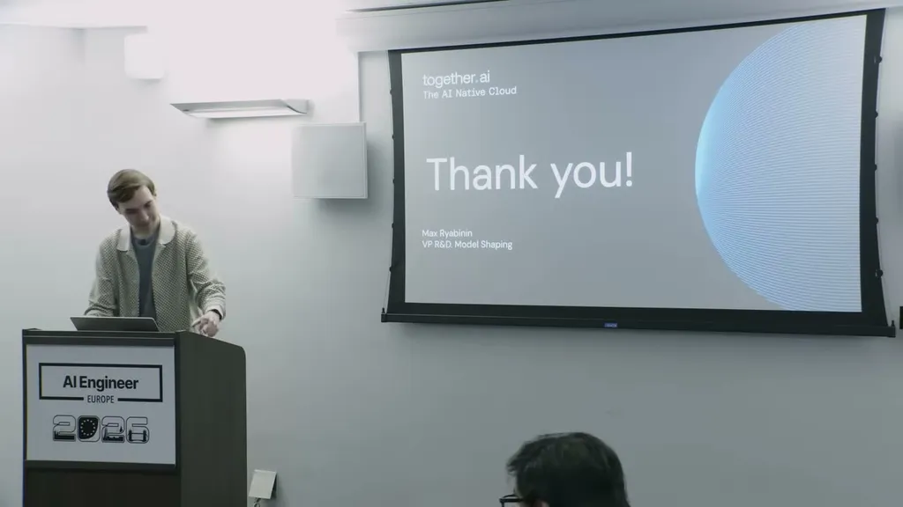
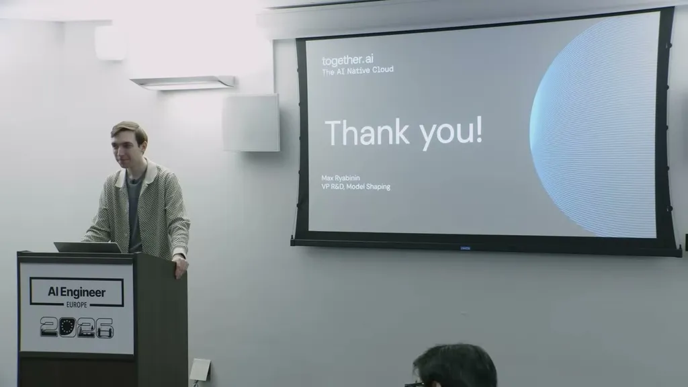
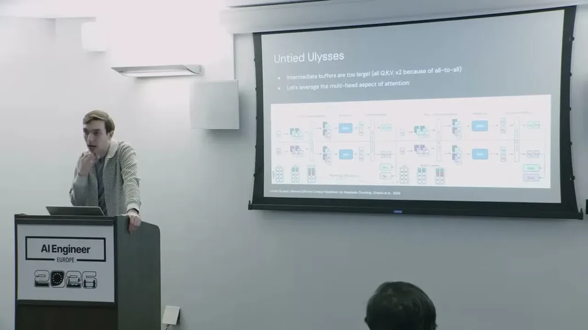
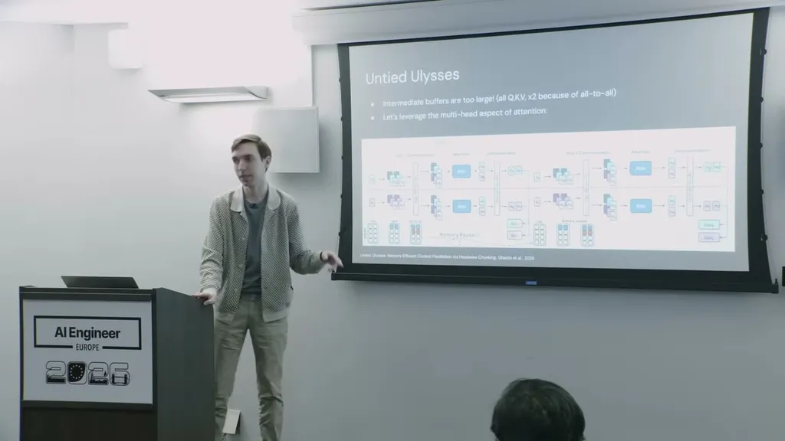
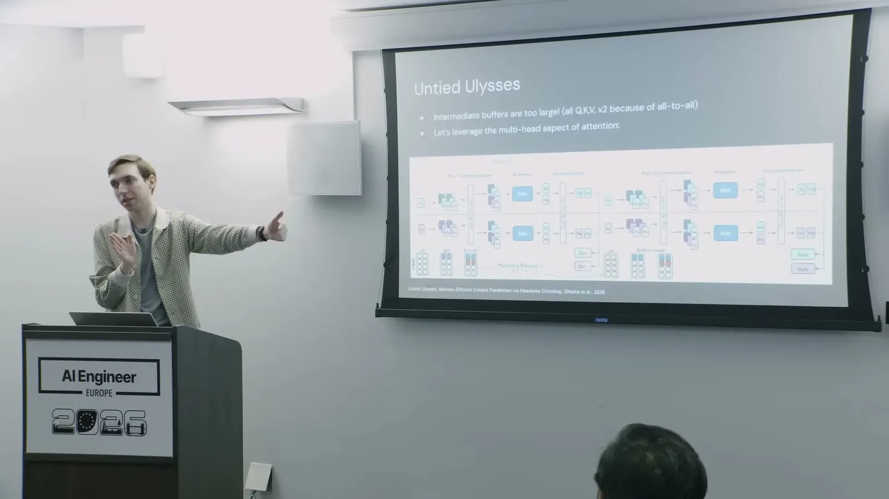
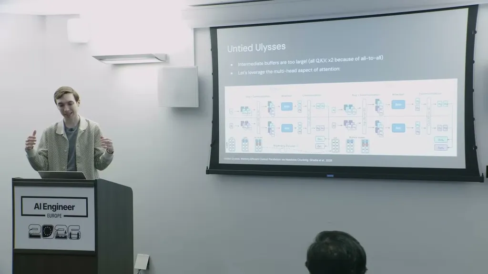
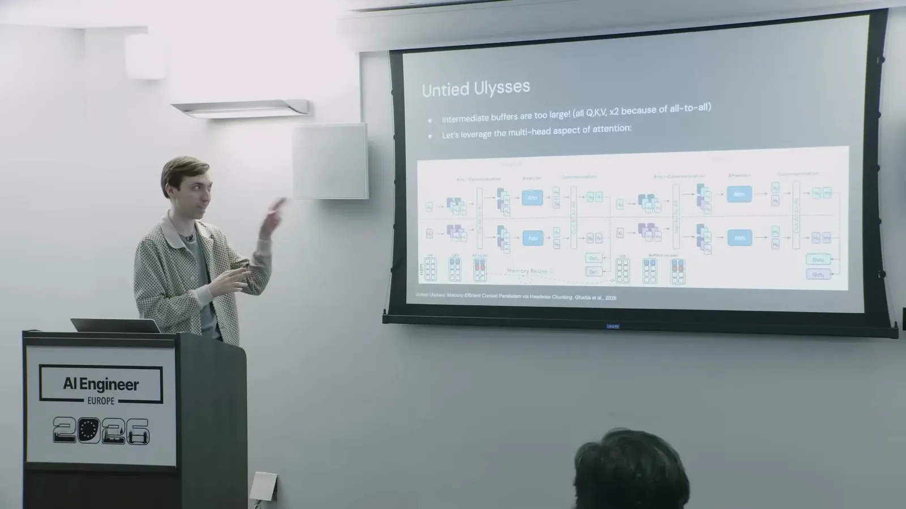
| Stance | Claim | t |
|---|---|---|
| asserts | Extending a standard transformer's context runs into a quadratic computation bottleneck from pairwise attention interactions. | 03:33 |
| warns | Memory grows linearly with context length and remains difficult to manage without specific optimization techniques. | 04:06 |
| recommends | The team recommends DeepSpeed Ulysses, a well-known Microsoft-introduced context parallelism technique, for extending context. | 06:10 |
| asserts | Applying Ulysses context parallelism dropped memory utilization by approximately 8x. | 07:13 |
| asserts | Activation checkpointing further reduced activation memory usage by roughly a factor of eight. | 08:18 |
| asserts | The CPU-offload technique for transformer-block inputs was first implemented by Unsloth, according to the team. | 08:50 |
| asserts | The stacked technique matches the most memory-optimized existing transformer training implementations at both 8B and 32B scale while reaching further context lengths. | 11:26 |
| asserts | Together's technique processes attention heads in chunks that reuse the same buffer across stages instead of allocating one large buffer. | 10:53 |
Machine-readable copy embedded in this page (script#ontology) and in the corpus ontology.